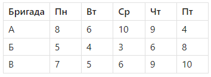

Тепловые карты

Андрей, привет! Сегодня мы познакомимся с тепловыми картами в Excel. Это один из самых быстрых и эффектных способов визуализировать таблицы без построения графиков. Я покажу, как с помощью условного форматирования окрасить ячейки по интенсивности значений: от слабых — к сильным, от минимальных — к максимальным. Это удобно при анализе загрузки бригад, расхода материалов, трудозатрат и других метрик. Урок короткий, но очень полезный — ты будешь использовать это каждый день. Поехали!
Что такое тепловая карта
Это таблица, где значения ячеек визуально выделены цветом:
- чем больше значение — тем ярче/насыщеннее цвет.
- чем меньше — тем бледнее/холоднее цвет.
Это не график — это обычная таблица Excel, но с цветовой раскраской.
Пример: загрузка бригад по дням (в часах):

Как применить тепловую карту
- Выдели диапазон ячеек со значениями.
Например: B2:F4. - Главное меню → Условное форматирование → Градиентная заливка (Color Scales):
Выбери, например, «от красного к зеленому» или «от светлого к темному». - Excel автоматически определит минимальное и максимальное значение в диапазоне и окрасит ячейки в зависимости от значений.
💡 Полезные советы и нюансы
Совет 1. Выбирай подходящую цветовую палитру.
Для восприятия: зеленый — хорошо, красный — плохо. Но можно использовать нейтральные (синий → белый → синий) для объективности.
Совет 2. Диапазон влияет на цвета.
Цвет зависит только от значений внутри выделенного диапазона. Если выделишь только одну строку — цвета будут другие, чем при выделении всей таблицы.
Не включай текстовые строки.
Условное форматирование работает только с числовыми значениями. Столбцы с текстом или датами — не форматируются корректно.
Совет 4. Цвет — это визуализация, не вывод.
Тепловая карта помогает видеть «провалы» и «перегрузы», но не заменяет расчеты.
Совет 5. Уточняй пороговые значения.
Можно настроить границы вручную — например: минимум = 0, максимум = 10 — и все значения отобразятся по общей шкале.
Практическая часть
📁 Задача: визуализировать загрузку бригад.
- Введи таблицу загрузки бригад по дням (как в примере выше).
- Выдели диапазон с числами.
- Примени градиентную шкалу цветом.
- Попробуй разные цветовые палитры.
- Настрой правило вручную: например, 0 = синий, 10 = красный.
- Убедись, что цвета читаются и значения легко сравниваются.